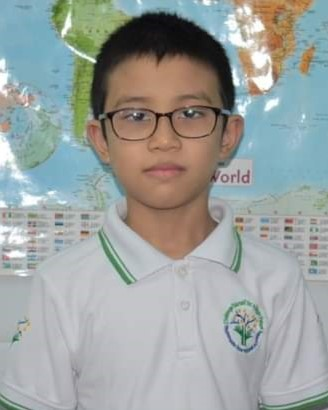

Student Testimonials
English For Young Learners

Khant Min Thuta
 Yangon, Myanmar
Yangon, Myanmar
Yangon, Myanmar
I'm Khant Min Thuta. I started learning English Language at Nationwide International Academy when I was four and a half years old. Teachers are good at teaching and pay attention to the students. I passed Canbridge Starters with full shields in 2017 and Movers with full shields in 2019 because my teachers taught me well. I've got many experiences in lessons and other activities, too. I really enjoy doing Art & Craft Projects with my friends. There is a library at school and it is my favourite place because I can read many different types of books during break time. Now, I'm learning Cambridge Key For School Online Course and I will try my best to get distinction in Key Exam. I want to say "Thank You" to all my teachers and I'm very happy to study at Nationwide International Academy.
 Soe Myint Tun
Yangon, Myanmar
Soe Myint Tun
Yangon, Myanmar
Hello everyone! My name is Soe Myint Tun and I have been studying at Nationwide International Academy since I was 11.
I'm currently learning Cambridge PET here. My English Language Skills used to be very poor before I joined Nationwide. Throughout the years, I can see myself improving at a rate. The teachers are very professional and good at teaching. They train us to become a better self and be independent learner. I have successfully completed Cambridge Flyers Exam with full shields and "Pass at Grade-A" in Cambridge KET Exam.
I enjoy attending classes and doing a variety of activities, assignments and projects. The library is my favourite corner because I can read different types of books during the break time.
I want to say "Thank You Very Much" to all my teachers and I will try my best to get distinction (Grade-A) in Cambridge PET exam. Nationwide International Academy is the best school that I've attended. If you don't believe me, you can try to study here and see for yourself.
 Swan Htet Zaw
Yangon, Myanmar
Swan Htet Zaw
Yangon, Myanmar
My name is Swan Htet Zaw. I am studying Cambridge KEY for School course at Nationwide International Academy. I joined Nationwide since I was 6 years old. I've learned a lot. Now I can speak English very well. I passed Cambridge Starters and Flyers exams with full shields. Moreover, I have been awarded Nationwide's Scholarship for two academic years. My teachers are so kind and friendly. They always help me and my classmates. We did many pronunciation activities in the classroom. Nationwide International Academy is awesome and motivating to learn English. I'd like to say "Thank You" to all the teachers at Nationwide International Academy.
 Myat Thiri Thaung
Yangon, Myanmar
Myat Thiri Thaung
Yangon, Myanmar
My name is Myat Thiri Thaung and I'm studying FCE at Nationwide International Academy. I've been studying at Nationwide since I was 6 years old. I've achieved "Pass at Grade A" in Cambridge PET Exam. I was really bad at English before I joined Nationwide. According to my experience at Nationwide, I found my friends and my teachers are really nice and kind. I make lots of new friends there and I can do many fun activities, too. Teachers always explain every lesson clearly and they help us whenever we are having trouble with our lessons. In my opinion, I think I'm a lot better at English than I was young. I think studying English is really fun and I can easily communicate with other people.
Myat Thaung Htut
Yangon, Myanmar
Yangon, Myanmar
I'm attending Cambridge PET Exam Preparation Online Course at Nationwide International Academy during Covid-19 pandemic. I have been learning English at Nationwide for three years and all my English language skills have improved. Online class is great because teachers explain clearly and patiently when we don't understand the lessons. I enjoy all my classes at Nationwide International Academy and would like to say "Thank You" to my teachers.
Chue Thinzar Kyaw
Yangon, Myanmar
Yangon, Myanmar
I have been learning at Nationwide International Academy since I was 10 years old. I've improved all of my English language skills during that time and I've got confidence to speak in English in front of the people. Teachers are very kind and patient. They train us well in exam preparation courses so that we get good result in exam. I'm studying Cambridge PET exam preparation online course at Nationwide and attending the online course is great because I don't need to go to school. It helps me save my time and I have enough time to do self-study as well. I'm fond of learning at Nationwide International Academy.
Bhone Zay Htike
Yangon, Myanmar
Yangon, Myanmar
I have been learning at Nationwide for one and a half year and all of my English skills have improved a lot during that time. Attending the class online is great because I don't need to go to school. So, I get a lot of free time to do self-study and I can easily concentrate on lessons, too. It saves my time & energy. I am really fond of studying at Nationwide.
Aye Pyae Phyo Py
Irrawaddy, Myanmar
Irrawaddy, Myanmar
My name is Aye Pyae Phyo Py and I'm a student at Nationwide International Academy. Before I studied English Language Proficiency Course at Nationwide, I didn't know the correct pronunciation of the words. But I know them now because of my first teacher at Nationwide, Tr.Yin Yin Thein. She teaches me how to pronounce the words carefully. I love my teachers and I enjoy studying at Nationwide. I have been attending there for 8 months. I know teachers at Nationwide can teach their students really well. I would like to say "Thank You" to all my teachers and Nationwide International Academy.
Aye Chan Min
Mandalay, Myanmar
Mandalay, Myanmar
I'm a student currently attending at Nationwide International Academy. At the age of 11, I started learning English Language Course at Nationwide. My first course was Cambridge KET Exam Preparation. Due to the Covid-19 pandemic, I had to attend online courses since June 2020. Even though we have to communicate online, I can learn as I'm in the classroom. I love doing projects with my friends as a team. I also like doing online presentations. While preparing for the exams, I practice with my friends to improve my English Language Skills. I have more free time to do self-study. I really enjoy studying at Nationwide.
Zin Lelt Min Tun
Mandalay, Myanmar
Mandalay, Myanmar
"2019ခုနှစ်တွင် Nationwide International Academy မှာ Englishစာသင်ယူပြီးနောက်ပိုင်း Englishစကားကို ပိုင်ပိုင်နိုင်နိုင် ပြောဆိုနိုင်သွားပါတယ်။
2022ခုနှစ်ကိုရောက်တော့ လုံး၀အမှားကင်းကင်းနဲ့ Englishစကားကိုပြောဆိုတတ်သွားပါတယ်။"
ပြောချင်တာကတော့ "ဆရာ၊ ဆရာမတွေကို အားကိုးရုံတင် မဟုတ်ပါဘူး။
ကိုယ်ကိုတိုင်ကလည်း ကြိုးကြိုးစားစားနဲ့သင်ယူပြီး ပုံမှန်လေးလည်း စာလုပ်ပေးနေရမယ်။
သမီးအမေက သမီးကို ဘယ်ကျောင်းကိုပဲသွားသွား ဒီစကားကို အမြဲတမ်းပြောပါတယ်။"
Linn Thit Htoo
Yangon, Myanmar
Yangon, Myanmar
I am happy to study at Nationwide. Teachers here are very kind & good at teaching. I have a lot of new friends and enjoy doing projects, arts & crafts.
I love studying songs and playing games with my friends.
English For Adults
 Kaung Htet Kyaw
Yangon, Myanmar
Kaung Htet Kyaw
Yangon, Myanmar
Hi, my name is Kaung Htet Kyaw. I've been a student of Nationwide International Academy since I was 16. I started as a beginner and I'm currently studying IELTS exam preparation course here. From the time of learning English at Nationwide, I've had a lot of professional and selfless guidance from the teachers and met plenty of friendly classmates. Throughout the years, I can see myself improving gradually from the consistent teaching and care of it. I enjoyed attending the classes from the start as they have activities for the students to communication in a fun environment. Overall, Nationwide International Academy has the best quality you can expect for your children or yourself to improve English Language skills.
Poe Thandar Min Lwin
Yangon, Myanmar
Yangon, Myanmar
I've been learning at Nationwide International Academy since I was 13 years old. I've obviously improved my English Language Skills and Communication Skills. I am learning English for Professionals Course now and it is helpful for my study and work. I really enjoy learning at Nationwide and thank to teachers.
Yunn Pwint Phyu
Yangon, Myanmar
Yangon, Myanmar
Hello! I am Yunn Pwint Phyu. I have successfully completed Professional English courses at Nationwide International Academy. My teacher, Tr.Thwe taught me in every detail so that my English Language Skills have improved. I had a really warm and friendly environment during my class hours even though I studied online. We did lots of practices and made many discussions to be more fluent. I am goint to study the IELTS Foundation course and try my best to get great band score.
Hnin Ei Phyu
Yangon, Myanmar
Yangon, Myanmar
Hello! I am Hnin Ei Phyu and I have successfully completed Professional English Course-Intermediate Level with credit from Nationwide International Academy. I used to have poor English and I didn't have confidence in using English language before I studied at Nationwide. Our Teacher is Tr.Thwe Thwe Htway and she is very kind, friendly and patient. We have done so many activities and presentations in out study time. That's why I have improved my English language skills. Now, I'm ready to attend IELTS Foundation Course and I am definitely sure that I will achieve great band scores in IELTS exam.
Tweltar Lamin Aung
Yangon, Myanmar
Yangon, Myanmar
I have learnt English at Nationwide International Academy since I was in middle school. Nationwide International Academy has taught me how to give presentation properly, how to prepare for IELTS using essential tips and more. I didn't face any difficulties in English Subject at school and at the university as well. I used to work as an intern at an NGO after my first degree, and I had to communicate with international employees. They even praise me regarding my pronunciation that makes me surprised. And I didn't find any difficulties while working with them. Moreover, I was also involved in a project for Tourism Development in Kawthaung in which I had to assit an International English teacher in her ESL training. What I have realized is that Nationwide International Academy has promoted my level of confidence in communicating with foreigners, and has encouraged my writing skill for assignments at the university.
IELTS Exam Preparation
Thoon Yati Chel
Yangon, Myanmar
Yangon, Myanmar
Hello, everyone! I am Thoon Yati Chel. I have learned English at Nationwide Internationwl Academy starting from YLE courses till I finished the IELTS exam. During the whole academic years, all of the teachers, especially Tr.Thwe taught me very kindly and warmly. I have also improved in all the English 4 skills as well as some soft skills because of group activities in class. It was comfortable and fun, learning with the teachers and friends both in peron classes and online classes. Now, I am chosen as one of the scholars to join Asian Nursing Scholarship Program in Singapore. I am very grateful to all my teachers because I would not become who I am now without their guidance and support.